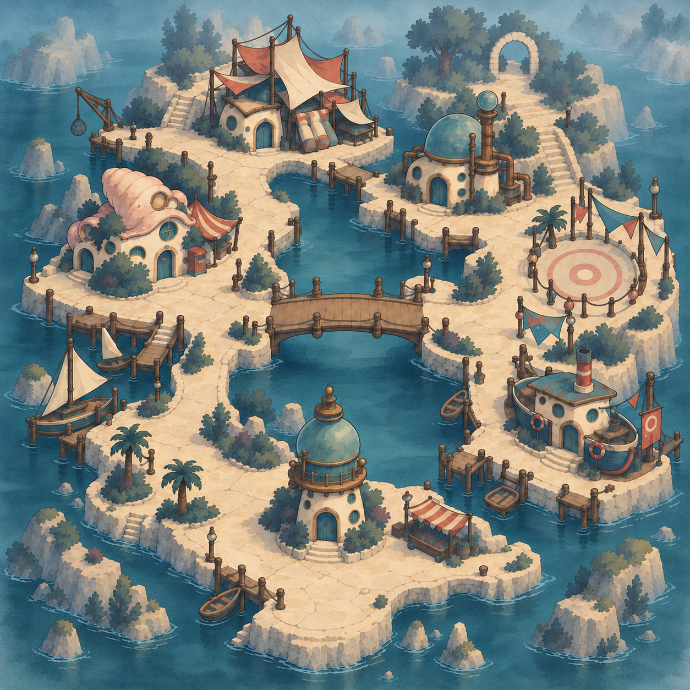
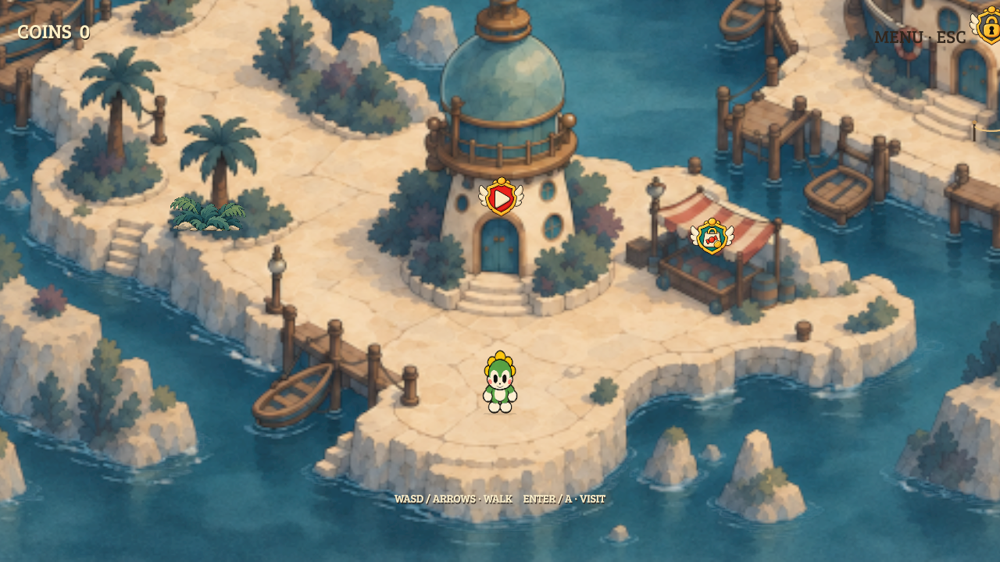
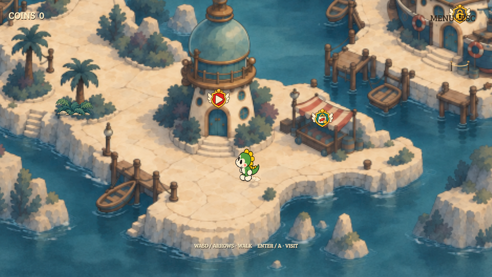
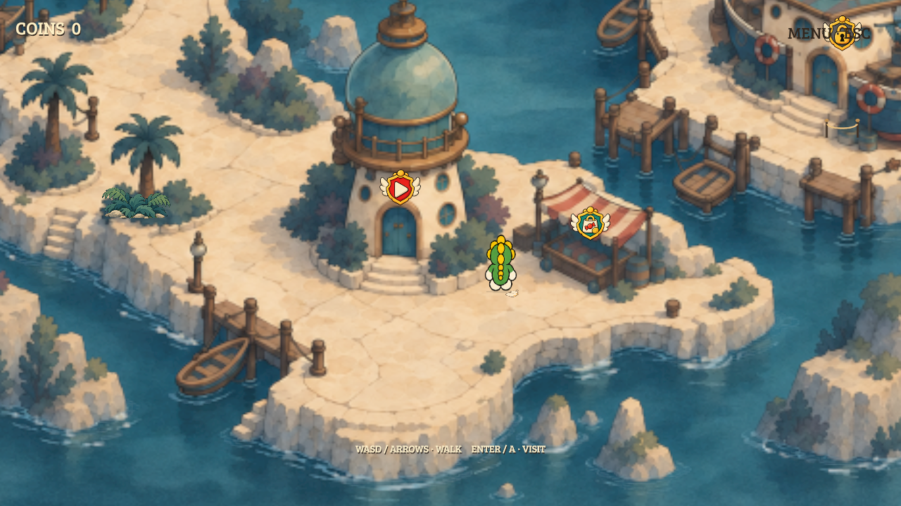

Ready
A mission you can enter now.

The Bubble Brigade · mission crest study
Review the ready, locked and three-star completed states. Each preview uses the same existing doorway and player, with a compact winged crest above the entrance.
A mission you can enter now.

An unavailable mission, clearly blocked.
A cleared mission displaying all three earned stars.
Approved art in the unchanged harbor. No world NPCs or map lettering. Footstep drawings follow actual contact frames and face along the ground plane.


